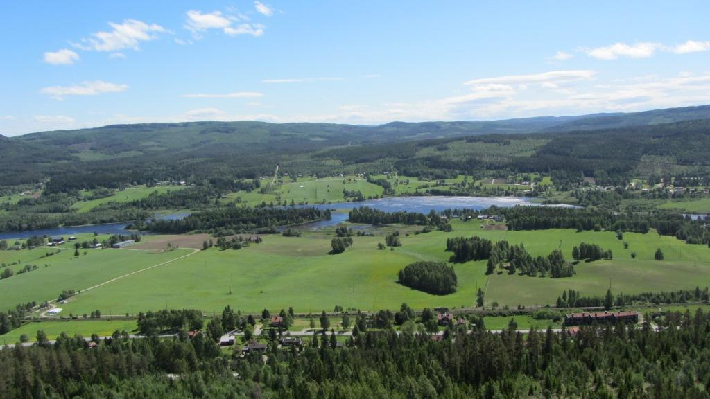

Lat: 62.50855 Long: 16.05483
Fin tradklättring i mitten av Sverige, med en samling av givna spricklinjer. Ett utmärkt ställe för er som gillar att jamma i sprickor. Getberget ligger efter E14 ungefär 50 minuters färd från Sundsvall.
Än så länge är det mest givna sprickor som utvecklats. Ett standardrack för Getberget bör innehålla kamkilar upp till Camelot #4. Flera leder kräver ännu större kamkilar, upp till camelot #5 & #6. Lederna är oftast 15-30 långa. För leder som det behövs speciellt rack för kommer information att presenteras i ledbeskrivningen. Det är väldigt lätt att hitta lederna, instegen har oftast en referenssten med namn & grad för att göra det lätt att orientera sig. Det här är inte din vanliga sportklippa, inga uteslutna grepp här...
Bara för att en led inte har några stjärnor behöver inte det betyda att leden inte är värd att klättras. Stjärnmarkeringarna finns till för att nya besökare lättare ska kunna hitta de allra finaste lederna. Klippkvalitetet är generellt mycket god, men hjälm är en fördel nu när området är nytt eftersom det än så länge kan rasa en del småsten. Det finns inget vatten vid klippan så ta med det dricksvatten du behöver.
Sugen på att göra nyturer? Sundsvalls klätterklubb hjälper gärna till med material om du behöver! Hör bara av dig till någon i styrelsen. Om ni gör nyturer och inte rensar fram dem så skippa gärna att registrera dem. Det stora jobbet är att rensa dem
Getberget ligger längs med E14 precis ovanför Ljungaverk. Sväng av från E14 vid skylt upp till Getbergets skidanläggning. Åk hela vägen upp till Toppstugan & parkera där. Följ stigen mot utsiktsplatsen & fortsätt sedan förbi grillplatsen ytterligare 300 meter efter en tydlig stig längs med staketet. När staketet tar slut så följ stigen neråt runt klippan, följ stigen tills den planar ut och följ klippväggen åt vänster efter 50 meter från att man har lämnat stigen så dyker de första lederna, den första väggen som kommer upp är övre östra klipporna.
[[Bild:nangijala.jpg|250 px|thumb| David vid Nangijala.
Foto: Anders Lidström]]
Höger kolumn
kategori:Saknar skiss
kategori:Saknar skrivarformatering
Kategori:trad
Category:Medelpad
Kategori:vertikalt
Copyright (C) Permission is granted to copy, distribute and/or modify this document under the terms of the GNU Free Documentation License, Version 1.3